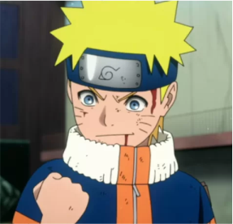

Naruto Uzumaki é um shinobi de Konohagakure do clã Uzumaki e protagonista homônimo da franquia Naruto. Desde seu nascimento, ele se tornou jinchūriki das Nove-Caudas, um destino que o levou a ser condenado e negligenciado por toda a aldeia durante sua infância. Depois de entrar para o Time 7, ao lado de Sakura Haruno, Sasuke Uchiha e sob comando de Kakashi Hatake, Naruto trabalhou duro para ganhar o respeito e o reconhecimento da aldeia, com o sonho de se tornar Hokage. Nos anos seguintes, Naruto torna-se um ninja capaz, que é eventualmente considerado como um herói pelas pessoas de sua aldeia, e mais tarde, pelo mundo shinobi em geral, renomado como o Herói da Vila Oculta da Folha. Posteriormente, Naruto descobre ser a reencarnação do espírito de Ashura e anos depois da Quarta Guerra Mundial Shinobi, Naruto realiza seu sonho e se torna o Sétimo Hokage. Naruto se casa com Hinata Hyūga e tem dois filhos com ela, Boruto Uzumaki e Himawari Uzumaki.
Quem é
Uzumaki
Naruto
Ninja Número Um
Hiperativo
Cabeça oca
Criança da Profecia
Salvador deste Mundo
Herói da Vila Oculta da Folha
Hokage Laranja de Konoha
Sétimo Hokage
Crescendo sem nenhuma figura paterna, Naruto é exuberante, ousado, desatento, descuidado e indiferente para a formalidade ou posições sociais. Ele costuma terminar frases com "Dattebayo!" quando animado ou frustrado. Ele tem uma série de características infantis, como ser um comedor muito exigente (ele come quase exclusivamente lámen), ter medo de fantasmas, além de carregar uma carteira gordinha de um sapo verde que ele chama de "Gama-chan". Naruto tem um hábito de dar às pessoas que ele conhece apelidos ou usar honoríficos inapropriados, como mostrado quando ele ofendeu o Segundo Hokage por não chamá-lo de "Senhor Segundo". Ele pode ser bastante pervertido, criando diferentes formas de sua Técnica Sensual e uma vez tentou dar uma espiadinha na casa de banho das mulheres quando a oportunidade apareceu. Apesar dessas peculiaridades, Naruto é dito ter uma personalidade que atrai as pessoas a ele, tendo uma amizade inspiradora e lealdade que a maioria das pessoas encontram nele através de seus atos de bondade e sinceridade genuína que pode mudar toda visão do mundo de um homem. Por exemplo, durante a Quarta Guerra Mundial Ninja; Naruto inspirou os Bijū a confiarem nele e, quando conectado com toda a Aliança Shinobi através de telepatia, ele foi capaz de reacender o espírito de luta dos exércitos desmoralizados, optando por continuar a lutar, apesar das perdas que ele poderia receber,como os shinobi foram feitos para suportarem as dificuldades.
Depois de se tornar Hokage, Naruto tem crescido mais sério e rigoroso com as suas funções, recebendo enormes responsabilidades e se tornando oprimido, levando-o a criar clones das sombras para ficar com sua família, que vem abalando seu relacionamento com seu filho, que ocasionalmente faz brincadeiras tais como desfigurar o Monumento Hokage para buscar sua atenção. Quando Boruto vandalizou o Monumento Hokage, Naruto soube que seu filho só queria sua atenção uma vez que eles não têm tanto tempo pessoal como costumavam ter antes de Naruto se tornar Hokage. Apesar de repreender Boruto por seu comportamento e sabendo que ele iria se atrasar para a Reunião dos Kage, Naruto passou algum tempo com seu filho para inspirá-lo a suportar qualquer dificuldade como um verdadeiro shinobi deveria, provando ser um pai amoroso.Eventualmente, Naruto chegou ao ponto usar seus clones das sombras para brincar com Boruto. Ao mesmo tempo, Naruto mantém algumas de suas excitações infantis.Do mesmo modo, ele ainda é delirante sobre suas habilidades na infância, comparando-as arrogantemente com as habilidades prodigiosas de Sasuke. No entanto, Naruto ainda mostra que ele se importa profundamente com sua família e está disposto a protegê-los em tempos de perigo, e tenta passar algum tempo com eles pessoalmente, provando ser um pai e marido amoroso.
Vídeos